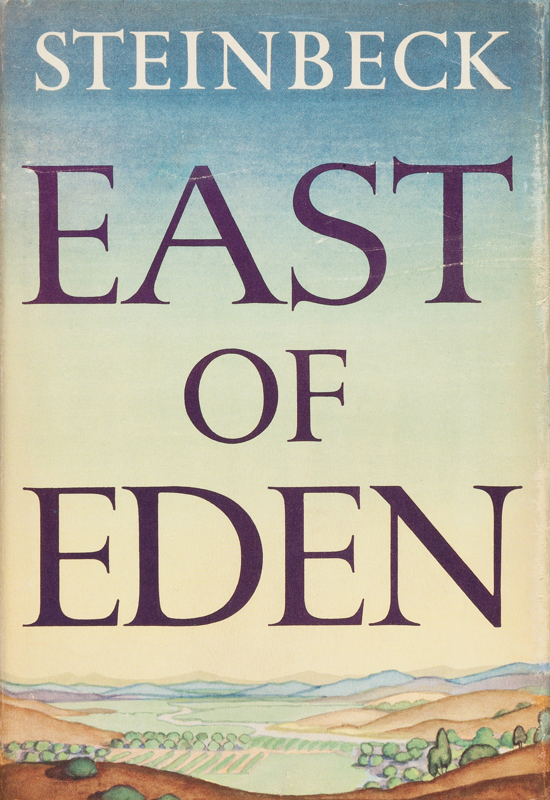

Demon Copperhead
By Barbara Kingsolver
Aug. 2023
Allegedly
By Tiffany D. Jackson
Jan. 2024
Mother Night
By Kurt Vonnegut
Jan. 2024
Flowers for Algernon
By Daniel Keyes
Feb. 2024
Animal Farm
By George Orwell
Feb. 2024

East of Eden
By John Steinbeck
March 2024